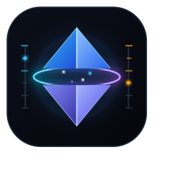
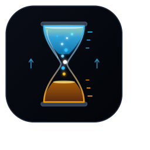
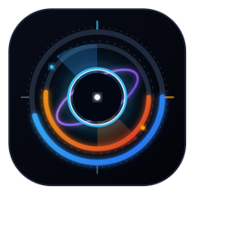
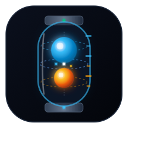

Rompiendo completamente con el cliché de la "letra A con anillo". Explorando la física de antigravedad, singularidades, tiempo invertido y núcleos de energía cuántica.
Un cristal cuántico / octaedro suspendido en gravedad cero dividido en dos mitades que levitan separadas, unidas por un haz de energía y un anillo de contención magnética con escala de cuota graduada.

Reloj cuántico de tiempo invertido: las partículas de cuota ascienden desafiando la gravedad. Representa las dos ventanas temporales que medimos (el ciclo de 5 horas y el reset semanal).

Un agujero negro / lente gravitatorio cuyo disco de acreción forma un panel de instrumentación HUD táctico: arco superior cian (5h) y arco lateral ámbar (semanal) con horizonte de sucesos puro.

Cápsula de vacío de alta tecnología con fluidos de plasma luminiscentes flotando libres en ingravidez absoluta (orbe Gemini y orbe Claude) con marcas de graduación de capacidad en el cristal.
